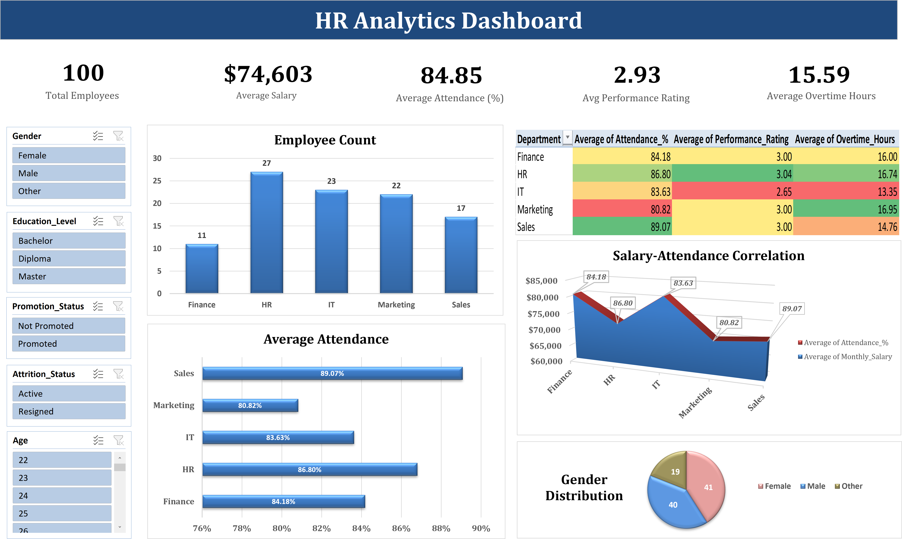
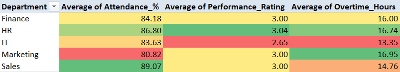
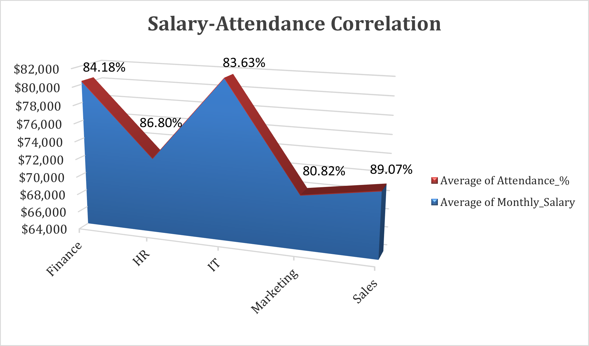
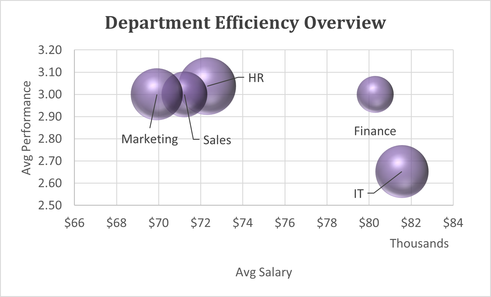
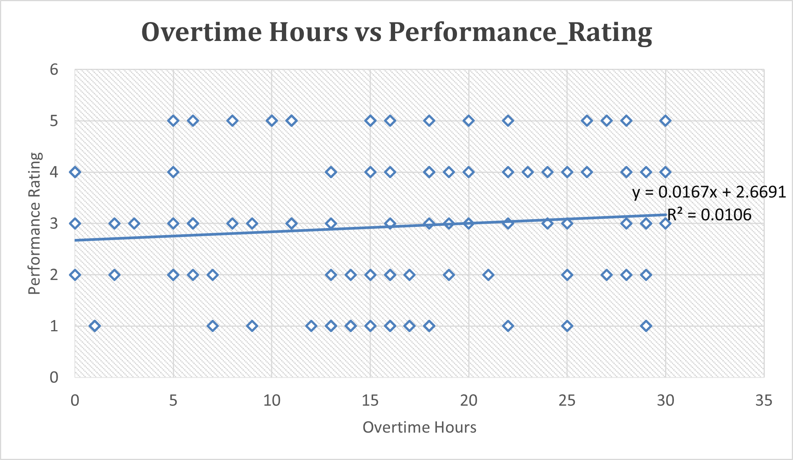

HR Analytics Dashboard
IT pays the most but performs the least. Marketing is burning out. Here's what the data says.

The Bottom Line
This dashboard was built for an HR manager who needs answers fast - not raw data. Analyzing 100 employee records across 5 departments in Excel, I found three problems hiding in plain sight: IT is overpaid relative to its output, Marketing is showing textbook burnout signals, and overtime has nearly zero effect on performance (R² ≈ 0.01). Each finding comes with a recommended action and a metric to track - because a dashboard that doesn't drive a decision isn't useful.
Key Findings at a Glance
Project Overview
HR data is only useful if it drives a decision. This project builds an interactive Excel dashboard across 100 employee records to answer four specific questions an HR manager would actually ask:
- Which department is overpaying relative to its performance output?
- Where is burnout risk highest - and what does the data look like before someone quits?
- Does working more overtime actually improve performance?
- Which high-performing teams are quietly underpaid and at risk of leaving?
The Dataset
100 employee records spanning 5 departments - HR, IT, Marketing, Sales, and Finance. Each record includes Employee ID, Gender, Age, Department, Education Level, Monthly Salary, Attendance %, Overtime Hours, Performance Rating, Promotion Status, and Attrition Status. The dataset is intentionally compact - 100 records is small enough to understand completely, which makes it ideal for demonstrating that analytical thinking matters more than data volume.
Methodology
1. Data Cleaning
Cleaning was done directly in Excel before any pivot tables or charts were built - to ensure every visual was pulling from accurate, consistent data.
- Checked for duplicates and missing values - none found, but validated explicitly so the analysis could be trusted without caveats.
- Standardized salary and attendance formats - ensured consistent numeric types so pivot table aggregations (averages, sums) wouldn't silently error on text-formatted numbers.
- Created three derived analytical columns using IF functions:
- Performance Evaluation - classified each employee as High/Mid/Low performer based on their rating, enabling segmentation in pivot tables beyond raw averages.
- Most Leaves Taken - flagged employees whose attendance fell below the departmental average, creating a binary filter for absenteeism analysis.
- Most Overtime Worked - flagged employees exceeding average overtime hours, used in the scatter plot correlation analysis.
Key Insights & Business Impact
Five findings from the dashboard - each with an interpretation, business impact, and a recommended action HR can take immediately.
1. IT: Highest Pay, Lowest Performance
What the data shows
IT has the highest average salary (~$81,561) but the lowest average performance rating (~2.65) of all five departments.
Interpretation
Compensation investment in IT is not translating into output. This points to possible hiring mismatches, skill gaps, or ineffective performance management.
Business Impact
Overpaying underperforming teams inflates labor cost without productivity return - distorting budget accuracy and reducing ROI per headcount.
Recommended Action
- Conduct a skill-gap audit - identify top 3 missing technical competencies within 2 weeks.
- Launch a 90-day Performance Improvement Program for low-performers and track rating change post-training.
Metric to track: Salary-to-performance ratio by department (monthly).
2. Marketing: Burnout Signal is Active
What the data shows
Marketing has the lowest attendance (~80.8%) yet the highest average overtime (~16.95 hrs).
Interpretation
Employees are overworked but disengaged - a classic indicator of fatigue-driven absenteeism. Sustained imbalance erodes creativity and delivery quality.
Business Impact
Burnout inflates turnover costs, delays campaigns, and weakens team morale - reducing marketing ROI and increasing rehiring frequency.
Recommended Action
- Run a workload distribution audit to identify and automate or redistribute repetitive tasks.
- Introduce flex days or a quarterly no-overtime week - measure effect on attendance and output.
Metric to track: Overtime vs absenteeism correlation (R coefficient) and monthly attrition within Marketing.
3. Sales: Loyal but Underpaid - Retention Risk
What the data shows
Sales has the highest attendance (~89%) but only a mid-range salary (~$71,225).
Interpretation
Sales staff are engaged and loyal - but stagnant pay makes them vulnerable to external offers, especially top performers.
Business Impact
Losing top sales reps directly reduces revenue and disrupts client relationships. Replacement cost is high due to retraining time.
Recommended Action
- Identify top 10% of sales performers by revenue contribution and benchmark their pay against market rates.
- Design a targeted retention package (bonuses + recognition) and A/B test outcomes over one quarter.
Metric to track: Voluntary attrition among top 20% sales performers and quota attainment pre/post retention intervention.
4. Overtime Does Not Improve Performance
What the data shows
The scatter plot shows R² ≈ 0.01 - virtually zero correlation between overtime hours and performance rating.
Interpretation
More hours do not produce better output. Overtime likely reflects inefficient task management or poor workload planning rather than genuine productivity.
Business Impact
Paying overtime without performance gain wastes payroll budget and signals workflow inefficiencies that compound over time.
Recommended Action
- Replace hours-based metrics with outcome-driven KPIs tied to measurable deliverables.
- Identify the top 10 repetitive tasks driving excessive overtime and initiate process improvement projects.
Metric to track: Overtime cost per unit of output (per deliverable or task completed).
5. HR: High Performance at Scale - Model Worth Replicating
What the data shows
HR has the largest headcount (27) and the highest average performance rating (~3.04).
Interpretation
HR's strong results at scale suggest effective internal systems - onboarding, knowledge sharing, and training - that are working. These are worth documenting and exporting to underperforming departments.
Business Impact
Replicating HR's processes in IT or Marketing could lift organizational performance faster than department-specific interventions - without adding headcount.
Recommended Action
- Document HR's highest-impact processes and pilot them in IT first - the highest-cost, lowest-performing department.
- Measure performance rating change after 90 days versus a control group.
Metric to track: Performance rating delta in pilot department vs baseline over 90 days.
2. Visualization in Excel
Pivot tables, pivot charts and advanced charts were created in Excel to examine workforce distribution, attendance patterns, compensation structure and deeper efficiency signals across departments.
Pivot Charts
Six pivot charts built directly from the pivot tables - each designed to make a specific pattern immediately visible to an HR manager without reading numbers.
Finding: HR is the largest team at 27, Finance the smallest at 11. The size gap between Finance (11) and HR (27) is significant - Finance delivers comparable performance with less than half the headcount, which raises a question about whether HR's size is a strength or an overhead concern.
Finding: The heatmap makes three signals visible simultaneously - IT has the lowest performance (2.65) despite decent attendance (83.63%); Marketing has the highest overtime (16.95 hrs) paired with the lowest attendance (80.82%); Sales has the best attendance (89.07%) with mid-level overtime (14.76 hrs). Red cells flag where action is needed, green where things are working. An HR manager can scan this in seconds and know where to focus.

Finding: Sales leads at 89.07%, HR follows at 86.80%, Finance at 84.18%, IT at 83.63% - and Marketing sits 8 percentage points below Sales at 80.82%. In a team of 22, that gap means roughly 2 people absent on any given day compared to Sales. The numbers tell the story clearly without needing the chart.
Finding: Finance ($80,287) and IT ($81,561) are the highest-paid departments yet their attendance tracks below Sales ($71,225) which has the highest attendance at 89.07%. The two lines move in opposite directions at the IT and Marketing points - salary peaks at IT while attendance dips, and salary drops at Marketing while attendance hits its lowest. Higher pay is clearly not driving higher engagement.

Finding: 41 female, 40 male, 19 other - a nearly equal split. This balance matters analytically: departmental performance and salary differences cannot be attributed to gender composition skew. The findings about IT's pay-performance gap and Marketing's burnout signal are about department structure and management, not demographics.
Finding: IT peaks at $81,561 and Marketing sits lowest at $69,912 - an $11,649 gap. HR sits in the middle at $72,310 despite being the largest team and highest performer. The IT salary spike is the central tension of this dashboard - highest pay, lowest performance.
Advanced Charts
Two multi-dimensional charts built to surface relationships that pivot tables and single-axis charts can't show.
X-axis: Avg Salary · Y-axis: Avg Performance Rating · Bubble size: Employee Count
Finding: The bubble chart tells the clearest story on the entire dashboard. IT sits bottom-right - largest salary ($81K+), lowest performance (2.65), mid-size bubble. Finance sits just above and to the left - nearly the same salary ($80K) but noticeably higher performance (~3.00) and a smaller team - making it the best ROI on compensation. HR, Sales, and Marketing cluster together in the lower-salary range ($69–$72K) but all perform around 3.00. The IT bubble is visually isolated from the rest — overpaid and underperforming relative to every other department.

Figure: Department Efficiency Overview - Salary vs Performance vs Headcount
Why this chart type matters: a standard bar chart could show salary OR performance, but not both at once. The bubble chart plots all three variables simultaneously - making the IT anomaly impossible to miss and impossible to explain away.
Finding: 100 individual data points plotted with overtime hours on the X-axis and performance rating on the Y-axis. The trendline is almost perfectly flat - R² = 0.0106, meaning overtime explains just 1% of the variation in performance. Employees working 0 hours of overtime and employees working 30 hours show virtually the same distribution of performance ratings across 1-5.

Figure: Overtime Hours vs Performance Rating - trendline R² = 0.0106
Interpretation: this is the most counterintuitive finding in the dataset. The assumption that "more hours = more output" is not supported by this data at all. The scatter confirms it isn't a department-level trend - it holds across all 100 individual employees. This makes the case for replacing overtime-based workload measurement with outcome-driven KPIs, and for investigating whether current overtime is driven by genuine workload or inefficient processes.
Summary
TOOLS
Excel (Data Cleaning and Visualization)
OBJECTIVE
To design an interactive HR Analytics Dashboard in Excel to visualize employee performance, attendance, and workforce trends for data-driven HR decisions.
KEY SKILLS
Pivot Tables & Pivot Charts | Data Cleaning | Dynamic Dashboards | KPI Metrics Design | Excel Formulas | Slicers & Data Connectivity | Conditional Formatting
Explore the Project
Dive deeper into the interactive dashboards and charts to explore the full project.